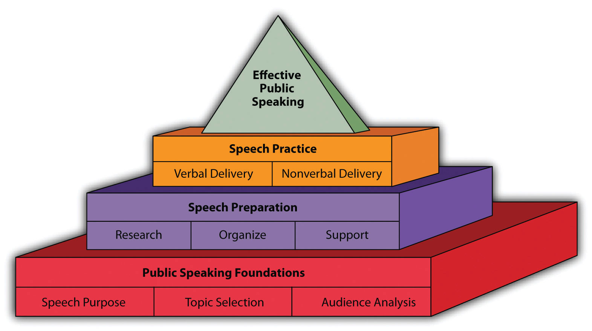

Ancient Egyptians believed that the shape of a pyramid was very important and sacred because the triangular shape would help guide the deceased’s body toward the stars into the afterlife. While this belief has long since disappeared, the idea of a structure guiding people in a specific direction toward greatness has remained.
Figure 19.1 Public Speaking Pyramid
In this brief appendix, we hope to start you on the path toward effective public speaking. To help us understand the basic process of public speaking, we have chosen to use a pyramid-based model of public speaking (). The rest of this chapter is going to briefly explain the basic public speaking process. We hope that this chapter will provide a simple overview of public speaking to help you develop your first speech. Each of the concepts explored in this chapter is fully developed elsewhere in Stand Up, Speak Out, so don’t assume that this one chapter covers everything you need to know.
Every speech has to start somewhere, and one of the most common questions we hear from students in a public speaking course is, “Where do I start?” Well, your public speaking teacher will definitely give you some specific guidelines for all the speeches in your class, but all speeches start with the same basic foundation: speech purpose, topic selection, and audience analysis.
The very first question you’ll want to ask yourself is this: what is the basic purpose of the speech you’re about to give? As far back as the ancient Greeks, scholars of public speaking have realized that there are three basic or general purposes people can have for giving public speeches: to inform, to persuade, and to entertain.
The first general purpose people can have for public speaking is to inform. When we use the word “inform” in this context, we are specifically talking about giving other people information that they do not currently possess. Maybe you’ve been asked to tell the class about yourself or an important event in your life. For example, one of our coauthors had a student who had been smuggled out of a totalitarian country as a small child with her family and fled to the United States, seeking asylum. When she told the class about how this event changed her life, she wasn’t trying to make the class do or believe anything, she was just informing the class about how this event changed her life.
Another common type of informative speech is the “how-to” or demonstration speech. Maybe you’ll be asked to demonstrate something to the class. In this case, you’ll want to think about an interesting skill that you have that others don’t generally possess. Some demonstration speeches we’ve seen in the past have included how to decorate a cake, how to swing a golf club, how to manipulate a puppet, and many other interesting and creative speeches.
The second general purpose that public speakers can have is to persuade. When you persuade another person, you are attempting to get that person to change her or his thought process or behavior. In the first case, you’re trying to get someone to change her or his opinion or belief to what you, as the speaker, want that person to think or believe after the speech. For example, maybe you belong to a specific religious group that doesn’t always get the greatest press. In your speech, you could try to tell your classmates where that negative press is coming from and all the good that your religious sect does in the world. The goal of this speech isn’t to convert people, it’s just to get people to think about your group in a more positive fashion or change their thought process.
The second type of persuasive speech, the more common of the two, is to get someone to change her or his behavior. In this case, your goal at the end of the speech is to see your audience members actually do something. When we want an audience to do something at the end of the speech, we call this a “call to action” because we are actually asking our audience members to act on what we’ve said during the speech. For example, maybe you’re an advocate for open-source (or free) software packages. So you give a speech persuading your classmates to switch from Microsoft Office to OpenOffice (http://www.openoffice.org). In your speech, you could show how the cost of Microsoft Office is constantly rising and that OpenOffice offers the exact same functionality for free. In this case, the goal of your speech is to have your classmates stop using Microsoft Office and start using OpenOffice—you want them to act.
The third general purpose people can have for public speaking is to entertain. Some speeches are specifically designed to be more lighthearted and entertaining for audience members. Quite often these speeches fall into the category of “after-dinner speeches,” or speeches that contain a serious message but are delivered in a lively, amusing manner that will keep people alert after they’ve finished eating a big meal. For this reason, most speeches that fall into the “to entertain” category are either informative or persuasive, but we categorize them separately because of reliance on humor. Effective speeches in this category are often seen as the intersection of public speaking and stand-up comedy. The speeches themselves must follow all the guidelines of effective public speaking, but the speeches must be able to captivate an audience through interesting and funny anecdotes and stories. Some common entertaining speech topics include everything from crazy e-mails people have written to trying to understand our funny family members.
Not all entertaining speeches include large doses of humor. Some of the most memorable speakers in the professional speaking world fall into the entertaining category because of their amazing and heart-wrenching stories. The more serious speakers in this category are individuals who have experienced great loss or overcome enormous hurdles to succeed in life and who share their stories in a compelling style of speaking. Audience members find these speakers “entertaining” because the speakers’ stories captivate and inspire. In the professional world of speaking, the most commonly sought after form of speaker is the one who entertains an audience while having a serious message but delivering that message in a humorous or entertaining manner.
Once you have a general purpose for speaking (to inform, to persuade, or to entertain), you can start to develop the overarching topic for your speech. Clearly, some possible speech topics will not be appropriate for a given general purpose. For example, if you’ve been asked to give an informative speech, decrying the ills of social policy in the United States would not be an appropriate topic because it’s innately persuasive.
In a public speaking class, your teacher will generally give you some parameters for your speech. Some common parameters or constraints seen in public speaking classes are general purpose and time limit. You may be asked to give a two- to three-minute informative speech. In this case, you know that whatever you choose to talk about should give your listeners information they do not already possess, but it also needs to be a topic that can be covered in just two to three minutes. While two to three minutes may seem like a long time to fill with information, those minutes will quickly disappear when you are in front of your audience. There are many informative topics that would not be appropriate because you couldn’t possibly cover them adequately in a short speech. For example, you couldn’t tell us how to properly maintain a car engine in two to three minutes (even if you spoke really, really fast). You could, on the other hand, explain the purpose of a carburetor.
In addition to thinking about the constraints of the speaking situation, you should also make sure that your topic is appropriate—both for you as the speaker and for your audience. One of the biggest mistakes novice public speakers make is picking their favorite hobby as a speech topic. You may love your collection of beat-up golf balls scavenged from the nearby public golf course, but your audience is probably not going to find your golf ball collection interesting. For this reason, when selecting possible topics, we always recommend finding a topic that has crossover appeal for both yourself and your audience. To do this, when you are considering a given topic, think about who is in your audience and ask yourself if your audience would find this topic useful and interesting.
To find out whether an audience will find a speech useful and interesting, we go through a process called audience analysis. Just as the title implies, the goal of audience analysis is to literally analyze who is in your audience. The following are some common questions to ask yourself:
These are some basic questions to ask yourself. Let’s look at each of them quickly.
The first question asks you to think generally about the people who will be in your audience. For example, are the people sitting in your audience forced to be there or do they have a choice? Are the people in your audience there to specifically learn about your topic, or could your topic be one of a few that are being spoken about on that day?
The second question you want to ask yourself relates to the demographic makeup of your audience members. What is the general age of your audience? Do they possess any specific cultural attributes (e.g., ethnicity, race, or sexual orientation)? Is the group made up of older or younger people? Is the group made up of females, males, or a fairly equal balance of both? The basic goal of this question is to make sure that we are sensitive to all the different people within our audience. As ethical speakers, we want to make sure that we do not offend people by insensitive topic selection. For example, don’t assume that a group of college students are all politically liberal, that a group of women are all interested in cooking, or that a group of elderly people all have grandchildren. At the same time, don’t assume that all topic choices will be equally effective for all audiences.
In addition to knowing the basic makeup of your audience, you’ll also want to have a general idea of what opinions they hold and beliefs they have. While speakers are often placed in the situation where their audience disagrees with the speaker’s message, it is in your best interest to avoid this if possible. For example, if you’re going to be speaking in front of a predominantly Jewish audience, speaking about the virtues of family Christmas celebrations is not the best topic.
The fourth question to ask yourself involves the current state of knowledge for your audience members. A common mistake that even some professional speakers make is to either underestimate or overestimate their audience’s knowledge. When we underestimate an audience’s knowledge, we bore them by providing basic information that they already know. When we overestimate an audience’s knowledge, the audience members don’t know what we’re talking about because they don’t possess the fundamental information needed to understand the advanced information.
As previously mentioned, speakers need to think about their audiences and what their audiences may find interesting. An easy way of determining this is to ask potential audience members, “Hey, what do you think about collecting golf balls?” If you receive blank stares and skeptical looks, then you’ll realize that this topic may not be appropriate for your intended audience. If by chance people respond to your question by asking you to tell them more about your golf ball collection, then you’ll know that your topic is potentially interesting for them.
The final question to ask yourself about your audience involves asking yourself about your audience’s needs. When you determine specific needs your audience may have, you conduct a needs assessment. A needs assessment helps you to determine what information will benefit your audience in a real way. Maybe your audience needs to hear an informative speech on effective e-mail writing in the workplace, or they need to be persuaded to use hand sanitizing gel to prevent the spread of the flu virus during the winter. In both cases, you are seeing that there is a real need that your speech can help fill.
Once you’ve finished putting in place the foundational building blocks of the effective public speaking pyramid, it’s time to start building the second tier. The second tier of the pyramid is focused on the part of the preparation of your speech. At this point, speakers really get to delve into the creation of the speech itself. This level of the pyramid contains three major building blocks: research, organization, and support.
If you want to give a successful and effective speech, you’re going to need to research your topic. Even if you are considered an expert on the topic, you’re going to need do some research to organize your thoughts for the speech. Research is the process of investigating a range of sources to determine relevant facts, theories, examples, quotations, and arguments. The goal of research is to help you, as the speaker, to become very familiar with a specific topic area.
We recommend that you start your research by conducting a general review of your topic. You may find an article in a popular-press magazine like Vogue, Sports Illustrated, Ebony, or The Advocate. You could also consult newspapers or news websites for information. The goal at this step is to find general information that can help point you in the right direction. When we read a range of general sources, we’ll start to see names of commonly cited people across articles. Often, the people who are cited across a range of articles are the “thought leaders” on a specific topic, or the people who are advocating and advancing how people think about a topic.
Once you’ve identified who these thought leaders are, we can start searching for what they’ve written and said directly. At this level, we’re going from looking at sources that provide a general overview to sources that are more specific and specialized. You’ll often find that these sources are academic journals and books.
One of the biggest mistakes novice public speakers can make, though, is to spend so much time reading and finding sources that they don’t spend enough time on the next stage of speech preparation. We recommend that you set a time limit for how long you will spend researching so that you can be sure to leave enough time to finish preparing your speech. You can have the greatest research on earth, but if you don’t organize it well, that research won’t result in a successful speech.
The next step in speech preparation is determining the basic structure of your speech. Effective speeches all contain a basic structure: introduction, body, and conclusion.
The introduction is where you set up the main idea of your speech and get your audience members interested. An effective introduction section of a speech should first capture your audience’s attention. The attention getter might be an interesting quotation from one of your sources or a story that leads into the topic of your speech. The goal is to pique your audience’s interest and make them anticipate hearing what else you have to say.
In addition to capturing your audience’s attention, the introduction should also contain the basic idea or thesis of your speech. If this component is missing, your audience is likely to become confused, and chances are that some of them will “tune out” and stop paying attention. The clearer and more direct you can be with the statement of your thesis, the easier it will be for your audience members to understand your speech.
The bulk of your speech occurs in what we call “the body” of the speech. The body of the speech is generally segmented into a series of main points that a speaker wants to make. For a speech that is less than ten minutes long, we generally recommend no more than two or three main points. We recommend this because when a speaker only has two or three main points, the likelihood that an audience member will recall those points at the conclusion of the speech increases. If you are like most people, you have sat through speeches in which the speaker rambled on without having any clear organization. When speakers lack clear organization with two or three main points, the audience gets lost just trying to figure out what the speaker is talking about in the first place.
To help you think about your body section of your speech, ask yourself this question, “If I could only say three sentences, what would those sentences be?” When you are able to clearly determine what the three most important sentences are, you’ve figured out what the three main points of your speech should also be. Once you have your two or three main topic areas, you then need to spend time developing those areas into segments that work individually but are even more meaningful when combined together. The result will form the body of your speech.
After you’ve finished talking about the two or three main points in your speech, it’s time to conclude the speech. At the beginning of the speech’s conclusion, you should start by clearly restating the basic idea of your speech (thesis). We restate the thesis at this point to put everything back into perspective and show how the three main points were used to help us understand the original thesis.
For persuasive speeches, we also use the conclusion of the speech to make a direct call for people change their thought processes or behaviors (call to action). We save this until the very end to make sure the audience knows exactly what we, the speaker, want them to do now that we’re concluding the speech.
For informative speeches, you may want to refer back to the device you used to gain your audience’s attention at the beginning of the speech. When we conclude back where we started, we show the audience how everything is connected within our speech.
Now that we’ve walked through the basic organization of a speech, here’s a simple way to outline the speech:
Introduction
Body of speech
Conclusion
Conclusionary device
You may think that once you’ve developed your basic outline of the speech, the hard part is over, but you’re not done yet. An outline of your speech is like the steel frame of a building under construction. If the frame isn’t structurally sound, the building will collapse, but no one really wants to live in an open steel structure. For this reason, once you’ve finished creating the basic structure of your speech, it’s time to start putting the rest of the speech together, or build walls, floors, and ceilings to create a completed building.
For each of the two or three main points you’ve picked in your speech, you need to now determine how you are going to elaborate on those areas and make them fully understandable. To help us make completed main points, we rely on a range of supporting materials that we discovered during the research phase. Supporting materials help us define, describe, explain, and illustrate the main points we selected when deciding on the speech’s organization. For example, often there are new terms that need to be defined in order for the audience to understand the bulk of our speech. You could use one of the sources you found during the research stage to define the term in question. Maybe another source will then help to illustrate that concept. In essence, at this level we’re using the research to support the different sections of our speech and make them more understandable for our audiences.
Every main point that you have in your speech should have support. For informative speeches, you need to provide expert testimony for why something is true or false. For example, if you’re giving a speech on harmfulness of volcanic gas, you need to have evidence from noted researchers explaining how volcanic gas is harmful. For persuasive speeches, the quality of our support becomes even more important as we try to create arguments for why audience members should change their thought processes or behaviors. At this level, we use our supporting materials as evidence in favor of the arguments we are making. If you’re giving a speech on why people should chew gum after meals, you need to have expert testimony (from dentists or the American Dental Association) explaining the benefits of chewing gum. In persuasive speeches, the quality of your sources becomes very important. Clearly the American Dental Association is more respected than Joe Bob who lives down the street from me. When people listen to evidence presented during a speech, Joe Bob won’t be very persuasive, but the American Dental Association will lend more credibility to your argument.
Once you’ve finished creating the physical structure of the speech, including all the sources you will use to support your main points, it’s time to work on delivering your speech. The old maxim that “practice makes perfect” is as valid as ever in this case. We are not downplaying the importance of speech preparation at all. However, you could have the best speech outline in the world with the most amazing support, but if your delivery is bad, all your hard work will be lost on your audience members. In this section, we’re going to briefly talk about the two fundamental aspects related to practicing your speech: verbal and nonverbal delivery.
Verbal delivery is the way we actually deliver the words within the speech. You may, or may not, have noticed that up to this point in this chapter we have not used the phrases “writing your speech” or “speech writing.” One of the biggest mistakes new public speakers make is writing out their entire speech and then trying to read the speech back to an audience. You may wonder to yourself, “Well, doesn’t the president of the United States read his speeches?” And you’re right; the president generally does read his speeches. But he also had years of speaking experience under his belt before he learned to use a TelePrompTer.
While reading a speech can be appropriate in some circumstances, in public speaking courses, the goal is usually to engage in what is called extemporaneous speaking. Extemporaneous speaking involves speaking in a natural, conversational tone and relying on notes rather than a prepared script. People who need to read speeches typically do so for one of two reasons: (1) the content of their speech is so specific and filled with technical terminology that misspeaking could cause problems, or (2) the slightest misspoken word could be held against the speaker politically or legally. Most of us will not be in either one of those two speaking contexts, so having the stuffiness and formalness of a written speech isn’t necessary and can actually be detrimental.
So how does one develop an extemporaneous speaking style? Practice! You’ve already created your outline, now you have to become comfortable speaking from a set of notes. If you put too much information on your notes, you’ll spend more time reading your notes and less time connecting with your audience. Notes should help you remember specific quotations, sources, and details, but they shouldn’t contain the entire manuscript of your speech. Learning how to work with your notes and phrase your speech in a comfortable manner takes practice. It’s important to realize that practice does not consist of running through your speech silently in your mind. Instead, you need to stand up and rehearse delivering your speech out loud. To get used to speaking in front of people and to get constructive feedback, and we recommend that you ask a few friends to serve as your practice audience.
In addition to thinking about how we are going to deliver the content of the speech, we also need to think about how we’re going to nonverbally deliver our speech. While there are many aspects of nonverbal delivery we could discuss here, we’re going to focus on only three of them: eye contact, gestures, and movement.
One of the most important nonverbal behaviors we can exhibit while speaking in public is gaining and maintaining eye contact. When we look at audience members directly, it helps them to focus their attention and listen more intently to what you are saying. On the flip side, when a speaker fails to look at audience members, it’s easy for the audience to become distracted and stop listening. When practicing your speech, think about the moments in the speech when it will be most comfortable for you to look at people in your audience. If you have a long quotation, you’ll probably need to read that quotation. However, when you then explain how that quotation relates to your speech, that’s a great point to look up from your notes and look someone straight in the eye and talk to them directly. When you’re engaging in eye contact, just tell yourself that you’re talking to that person specifically.
A second major area of nonverbal communication for new public speakers involves gesturing. Gesturing is the physical manipulation of arms and hands to add emphasis to a speech. Gestures should be meaningful while speaking. You want to avoid being at either of the extremes: too much or too little. If you gesture too much, you may look like you’re flailing your arms around for no purpose, which can become very distracting for an audience. At the same time, if you don’t gesture at all, you’ll look stiff and disengaged. One of our friends once watched a professor (who was obviously used to speaking from behind a lectern) give a short speech while standing on a stage nervously gripping the hems of his suit coat with both hands. Knowing how to use your hands effectively will enhance your delivery and increase the impact of your message.
If you’re a new speaker, we cannot recommend highly enough the necessity of seeing how you look while practicing your speech, either by videotaping yourself or by practicing in front of a full-length mirror. People are often apprehensive about watching video tapes of themselves speaking, but the best way to really see how you look while speaking is—well, literally to see how you look while speaking. Think of it this way: If you have a distracting mannerism that you weren’t conscious of, wouldn’t you rather become aware of it before your speech so that you can practice making an effort to change that behavior?
The last major aspect of nonverbal communication we want to discuss here relates to how we move while speaking. As with gesturing, new speakers tend to go to one of two extremes while speaking: no movement or too much movement. On the one end of the spectrum, you have speakers who stand perfectly still and do not move at all. These speakers may also find comfort standing behind a lectern, which limits their ability to move in a comfortable manner. At the other end of the spectrum are speakers who never stop moving. Some even start to pace back and forth while speaking. One of our coauthors had a student who walked in a circle around the lectern while speaking, making the audience slightly dizzy—and concerned that the student would trip and hurt herself in the process.
When it comes to movement, standing still and incessant pacing are both inappropriate for public speaking. So how then should one move during a speech? Well, there are a range of different thoughts on this subject. We recommend that you plan out when you’re going to move while speaking. One common way is to purposefully move when you are making the transition from one major point of your speech to the next. You might also take a step toward the audience at the moment when you are intensifying a point, or take a step back when saying something like, “Let’s back up and think about this for a moment.” However, we don’t recommend moving when discussing important, complex ideas during your speech because the movement could be distracting and prevent audience members from fully understanding your message. Overall, you should practice movement so that it becomes comfortable for you and second nature.
In this appendix, we have introduced you to the basics of effective public speaking. We discussed building an appropriate foundation for your public speech, preparing your speech, and practicing your speech. All the concepts discussed in this appendix will be more fully discussed in the other chapters in this book. We hope this introduction will give you a boost as you start your journey toward effective public speaking.